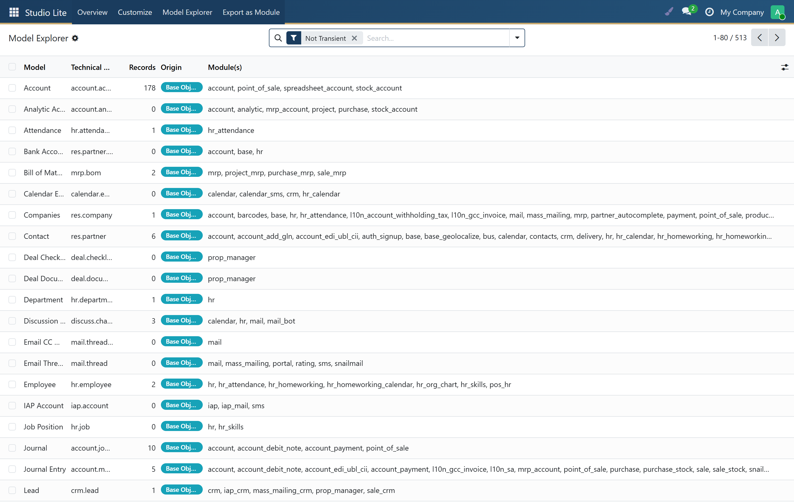
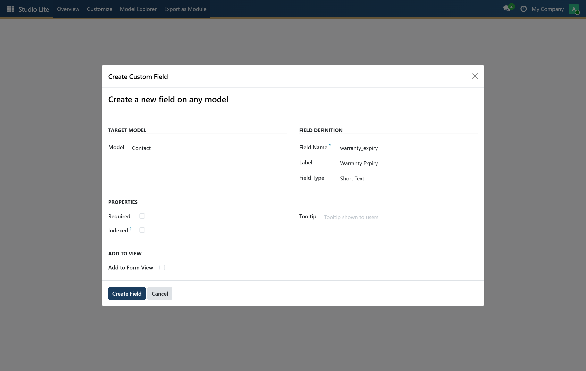
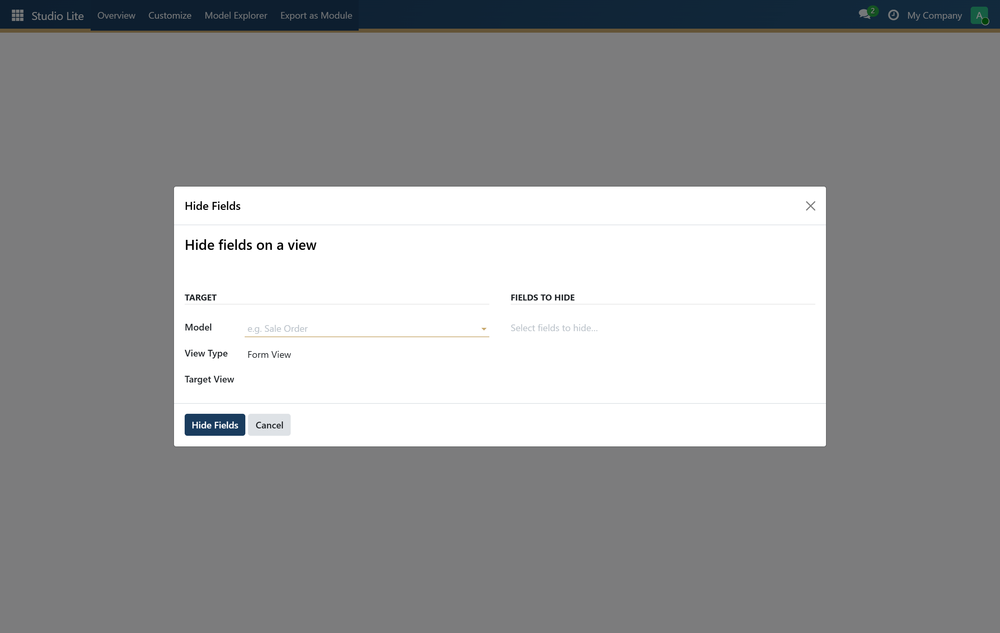
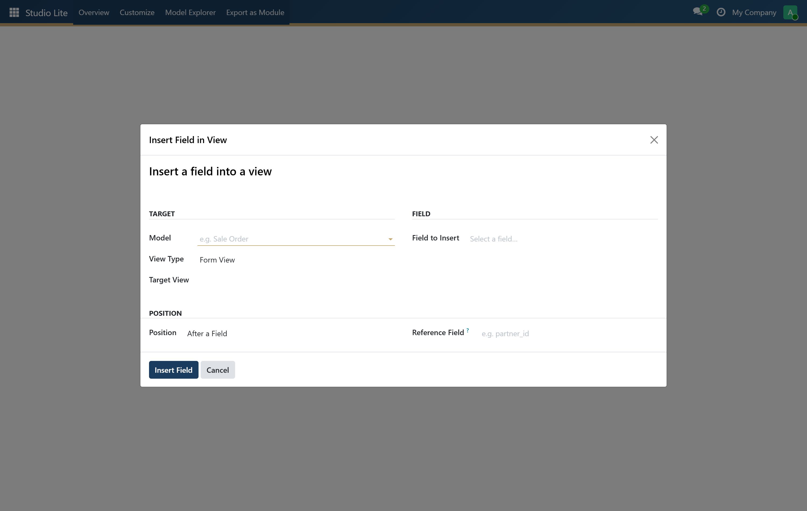
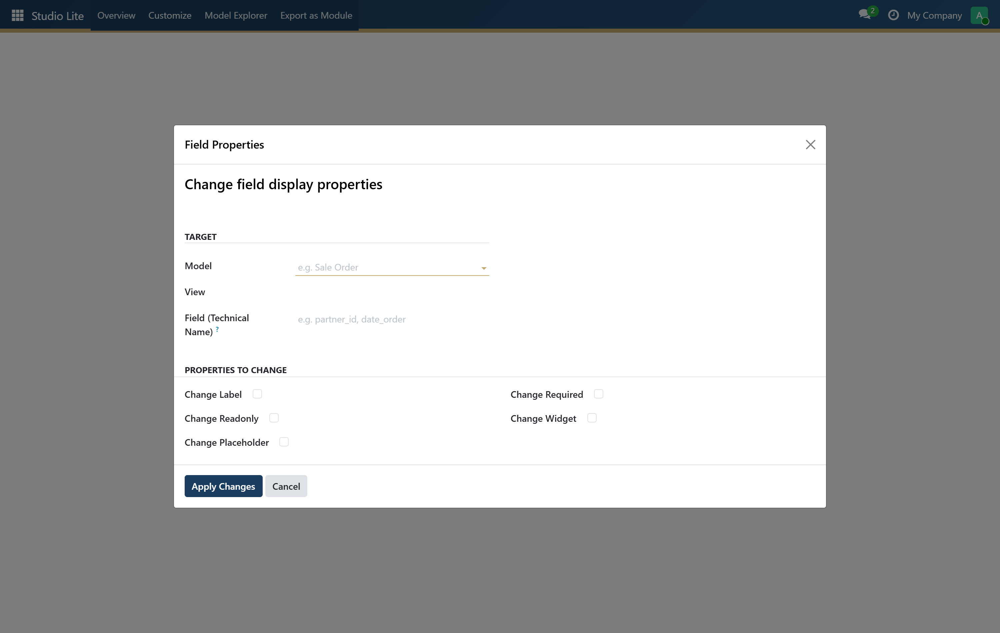
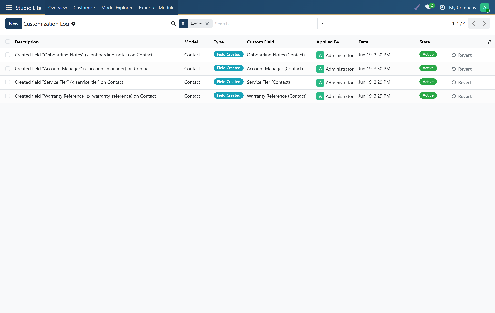
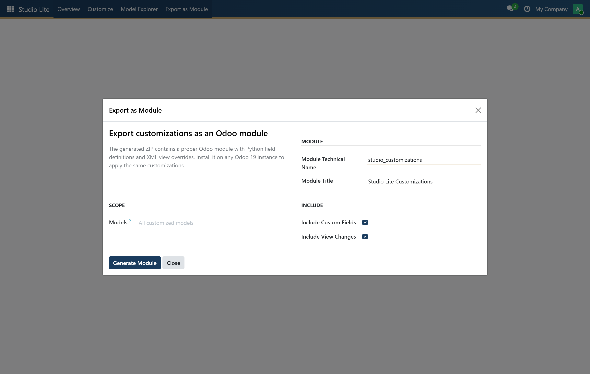

A lightweight, no-subscription alternative to Odoo Studio. Add fields, adjust views, hide clutter, change properties — then export everything as a clean, installable module. All from a friendly UI inside your Odoo backend.
Studio Lite gives Odoo Community Edition users the power to customise their instance at runtime — without developer access, without touching code, and without upgrading to Odoo Enterprise.
Every change is recorded in a customisation log with a one-click revert, so nothing is ever irreversible. When you are ready to move to production, hit Export as Module and download a clean, version-controlled ZIP that installs on any Odoo 19 server.
A guided tour of every screen — real screenshots from a live Odoo 19 instance.
Browse every installed model in a searchable list, see record counts and origin, and launch the customisation wizards from one place.

Add any field type to any model and optionally drop it straight onto a form view.

Declutter busy forms and lists by toggling field visibility — no data is lost.

Place an existing field exactly where you want it — before/after a field or in a new group.

Override label, required, readonly, widget and placeholder — per view, no model changes.

Every change is logged with who, what and when — revert any single one in a click.

Package all active customisations into a downloadable, installable Odoo addon ZIP.

Add new fields (text, integer, float, monetary, date, datetime, boolean, selection, Many2one, Many2many, binary, HTML…) to any installed model at runtime — schema changes are applied automatically.
Toggle visibility of standard or custom fields on form and list views. Declutter busy screens without losing underlying data.
Place any existing field precisely — before or after another field, in a new group, or on a brand-new notebook page — with a simple wizard.
Override any field's label, required flag, readonly state, widget and placeholder on a per-view basis, without altering the underlying model.
Every change is stored in a structured log. Revert any single customisation in one click — safely and surgically, without affecting other changes.
Package all active customisations into a downloadable ZIP module. Deploy the same changes on staging, production, or another customer — via standard Odoo module installation.
Browse every installed model in a searchable list and jump straight into the customisation wizards from a single panel.
| Feature | Studio Lite (this) | Odoo Studio (Enterprise) |
|---|---|---|
| Add custom fields | ✅ | ✅ |
| Hide / show fields | ✅ | ✅ |
| Insert fields in views | ✅ | ✅ |
| Override field properties | ✅ | ✅ |
| Revert individual changes | ✅ | ✅ |
| Export as installable module | ✅ | ❌ |
| Works on Community Edition | ✅ | ❌ |
| One-time purchase | ✅ | ❌ (subscription) |
| Drag-and-drop view builder | ❌ | ✅ |
base and web modules — no third-party Python packages required.Will my customisations survive an Odoo upgrade?
Because Studio Lite stores customisations as standard Odoo view inherits and field
definitions, they behave exactly like any other custom module. The exported ZIP can
be tested and re-installed after an upgrade as part of your normal migration process.
Can I use the exported module on a different server?
Absolutely. The exported ZIP is a standard Odoo addon — copy it to any server's
custom addons path and install it like any other module.
Can non-technical staff use it?
Yes. The wizards use plain language and dropdown menus. No Python or XML knowledge
is required to create fields, hide columns, or adjust labels.
Does it conflict with Odoo Studio (Enterprise)?
No. Studio Lite and Odoo Studio work independently. If you later upgrade to Enterprise,
your Studio Lite customisations continue to work alongside Odoo Studio.
Studio Lite — by Leeno Consult · support@leenconsult.com